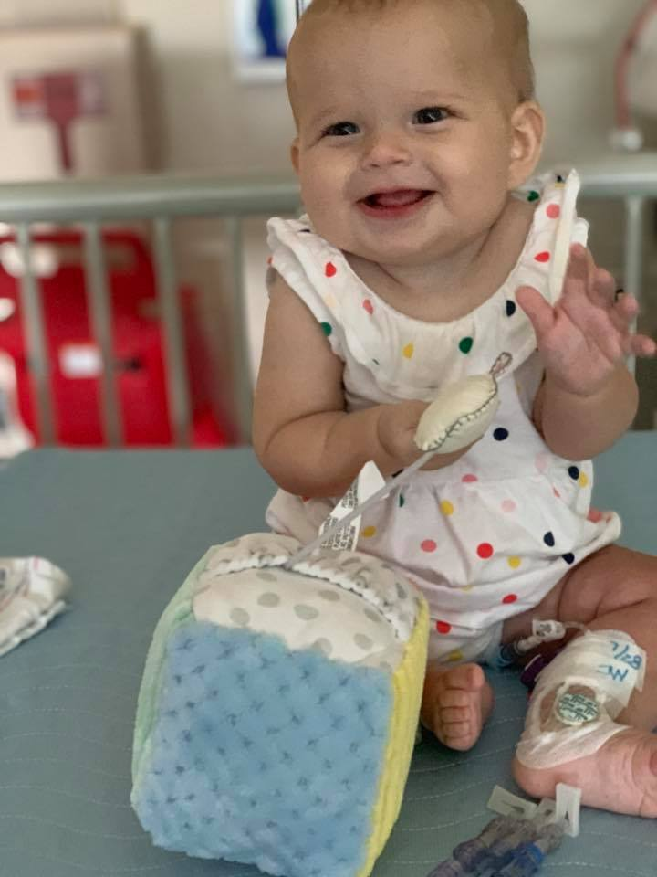

HopeKids is a wonderful nonprofit that provides events and classes for sick children and their families. They still include our family even after Jazmine has passed. Since a lot of the kiddos are quarantined at home because of their weakened immune system or in a hospital , I would like to do another toy drive along with checking and sanitizing items that may need to be needed. Everything donated with be given to the HopeKids organization who will then make sure those in need will receive them.
Deadline: Dec 10, 2023